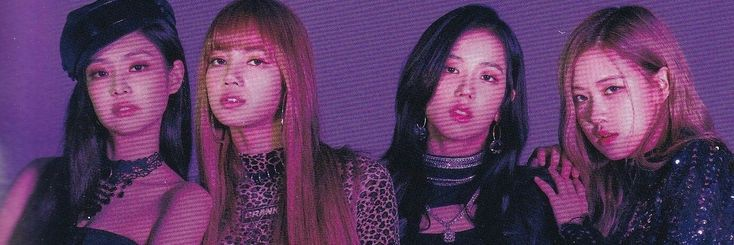
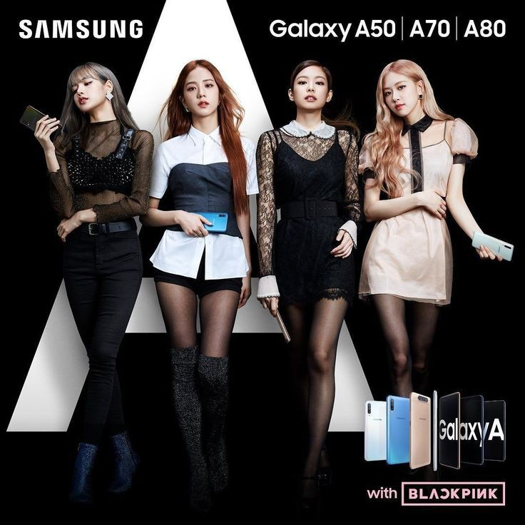
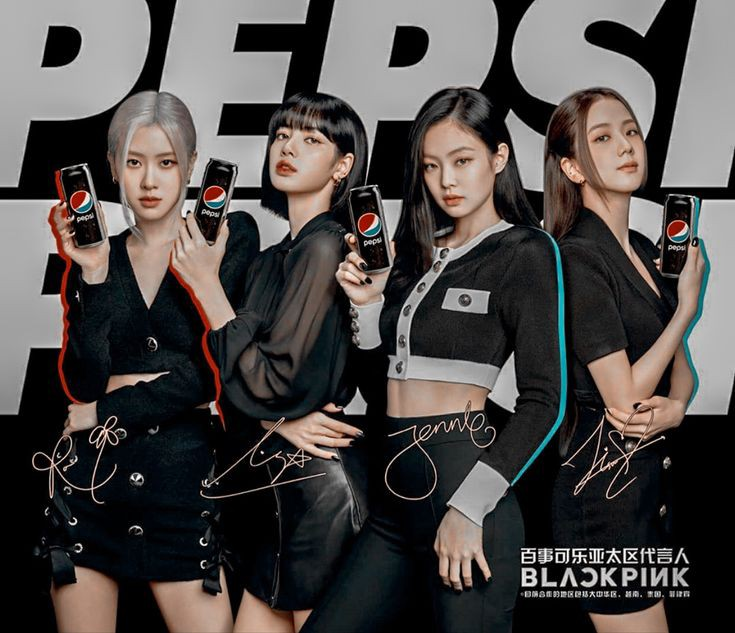
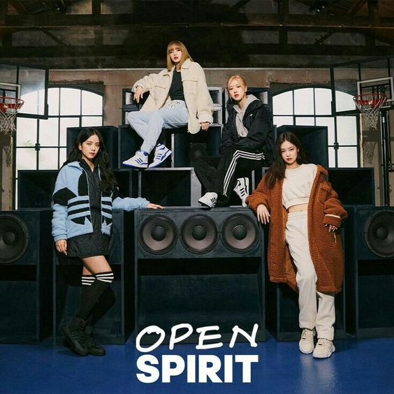
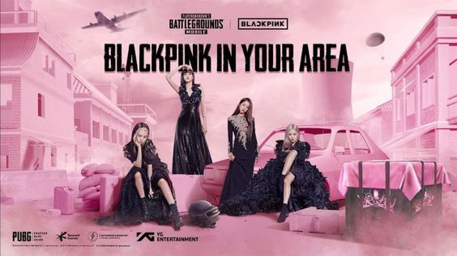
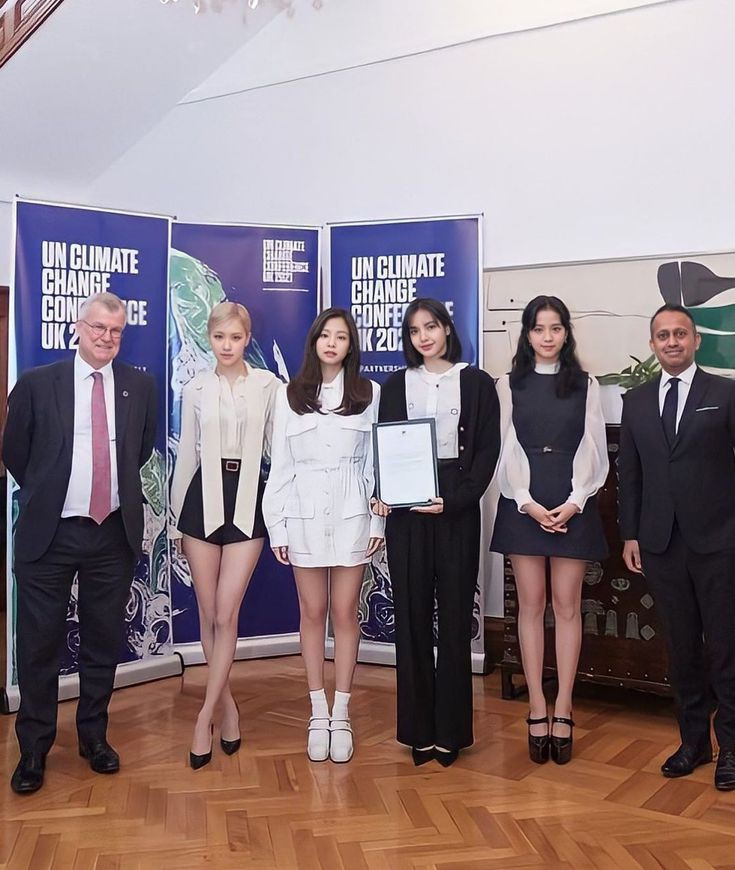

Imagen Publica
Desde su debut, Blackpink se ha convertido en un acto destacado en la industria del k-pop y ha sido descrito como el «grupo femenino más grande del mundo», «la banda de chicas de k-pop más grande del planeta» y «las reinas del k-pop». Han ganado una inmensa popularidad en Corea del Sur, y Forbes Korea Power Celebrity nombró a Blackpink como las celebridades más poderosas de Corea del Sur en el 2019 y la tercera celebridad más poderosa en 2020. Múltiples medios de comunicación internacionales, tales como Forbes, Billboard y The Hollywood Reporter han reconocido la popularidad del grupo y su contribución a la difusión de la Ola Coreana en todo el mundo. Blackpink fue citado por la revista Rolling Stone como una excepción al estereotipo de los actos de k-pop más exitosos en los Estados Unidos, como lo son las boy bands. El grupo también fue acreditado como uno de los dos actos que lideran el crecimiento de la industria de la música coreana por la Federación Internacional de la Industria Fonográfica (IFPI).
Blackpink ha formado parte de diversos listados musicales y fueron el primer grupo de chicas en ser incluidas en la lista Forbes 30 Under 30 de Asia. También fueron incluidas en la lista 100 Next de 2019 de la revista Time, de estrellas en ascenso que están dando forma al futuro en distintas áreas alrededor del mundo, en donde se indicó que «representan una nueva era de actos coreanos que superan las barreras del idioma para escenarios globales», esto tras convertirse en el primer grupo femenino de k-pop en presentarse en el festival de música Coachella. Blackpink fue nombrado por Bloomberg el acto más grande de música en el mundo en el mes de octubre de 2020 en su lista Pop Star Power Ranking, otorgado por primera vez a un acto de Corea.
En julio de 2018 y agosto de 2020, el grupo ocupó el primer lugar entre todos los artistas de Corea del Sur en mejor reputación de marca según los análisis del Instituto de Investigación de Reputación de Corea, lo que los convierte en el único acto femenino en lograrlo.
Blackpink ha acumulado un gran número de seguidores en las redes sociales y las plataformas de transmisión. Se convirtieron en el grupo de música con más suscripciones en YouTube en septiembre de 2019, y en septiembre de 2021, en el artista con más suscriptores, sumando más de 68 millones. Las miembros de Blackpink también son las personas más seguidas en Corea del Sur en Instagram, siendo el primero, segundo, tercero y cuarto lugar para Lisa, Jennie, Jisoo y Rosé, respectivamente. Blackpink se convirtió en el grupo femenino más seguido en Spotify en noviembre de 2019. A enero de 2021, han acumulado más de 17,8 millones de seguidores.
El 11 de enero de 2021, en su discurso de año nuevo, el Presidente de Corea del Sur, Moon Jae-in, reconoció a Blackpink como uno de los representantes del país en el mundo, asegurando que «Dan felicidad y esperanza a las personas alrededor del mundo».
En junio de 2022, Blackpink se convirtió en el tercer grupo femenino de la historia en ser portada de la revista estadounidense Rolling Stone, tras las apariciones de Spice Girls en 1997 y Destiny's Child el año 2001. Ese mismo mes, la misma revista destacó que, a pesar de llevar dos años hasta esa fecha sin sacar música, sostiene su reinado como el acto musical más seguido en la historia de YouTube, convirtiéndose en el primero en alcanzar los 75 millones de suscriptores en la plataforma.

En mayo de 2021, la organización internacional sin fines de lucro Gold House incluyó a Blackpink en su lista anual A100, que considera a los asiáticos, asiaticoamericanos e isleños del Pacífico más impactantes en cultura, honrando tanto la excelencia en los logros como la eminencia en el activismo, siendo el único grupo de k-pop en la lista y compartiendo el logro con personalidades como la Vicepresidenta de los EE.UU. Kamala Harris, la directora china ganadora del Oscar Chloé Zhao y el actor Riz Ahmed. Ese mismo mes, un estudio financiero del primer trimestre de grandes empresas surcoreanas determinó que YG Entertainment había experimentado un superávit de beneficio operativo de 9.500 millones de wones gracias al éxito en ventas de Blackpink, estimando que pueden vender entre 2 y 2,5 millones de álbumes por año. Kim Hyun-yong, investigador de Hyundai Motor Securities, indicó que "solo Blackpink les ha permitido a la compañía una ganancia operativa anual de alrededor de 30 mil millones de wones".
En diciembre de 2021, Blackpink ocupó el tercer lugar en los diez mejores cantantes de Corea del Sur para el grupo de edad de menos de 40, según la encuesta de fin de año realizada por la empresa de investigación surcoreana Gallup Korea Research Institute, siendo el grupo femenino mejor posicionado en la lista.
El 14 de enero de 2022, se dio a conocer que, en conmemoración del aniversario N.º 30 de Interscope Records, se llevaría a cabo una exposición pictórica de 50 cuadros de artistas visuales que crearon obras originales inspiradas en canciones y álbumes lanzados por los artistas musicales del sello a lo largo de los años. Esta exposición, llevada a cabo en el Museo de Arte del Condado de Los Ángeles del 30 de enero al 13 de febrero de 2022, presenta, entre otras obras sobre artistas como Lady Gaga, Olivia Rodrigo y Billie Eilish, un cuadro inspirado en The Album de Blackpink titulado "Seeking Hearts", realizado por la pintora estadounidense Jennifer Guidi. «Blackpink ha roto las barreras para las mujeres de muchas maneras y quería honrar eso al acercarme a este proyecto con la idea del poder femenino en mente. Hay un reconocimiento literal de la banda al crear una pintura en negro y rosa, y me atrajo la relación de los dos colores, el amor y el romance entrelazados con la sofisticación y la mística, y su complejidad como un todo», señaló la artista.
El 20 de abril de 2022, el Presidente de Corea del Sur Moon Jae-in en una reunión formal realizada en la Casa Azul junto a exministros de Estado como Lee Nak-yeon y Chung Sye-kyun, entre otros, destacó a Blackpink como uno de los representantes de la cultura coreana que es destacada y reconocida por el mundo y los líderes extranjeros, junto a otros actos como la película Parásitos y la serie Squid Game.
El 26 de mayo de 2022, las miembros de Blackpink fueron invitadas a la Embajada del Reino Unido en Corea del Sur a conmemorar el Jubileo de Platino de Isabel II, que celebra el cumpleaños número 96 de la Reina Isabel II del Reino Unido, debido a la estrecha relación con dicho país cuando fueron designadas Embajadoras de la Conferencia de las Naciones Unidas sobre el Cambio Climático de 2021 (COP26) y Defensoras de los Objetivos de Desarrollo Sostenible (ODS).
Publicidad
Blackpink ha adquirido numerosos acuerdos de patrocinio con diversas industrias a lo largo de su carrera. Apenas siete meses después de su debut, el grupo firmó como rostro oficial de LG Mobile Korea para promocionar su nuevo dispositivo LG G6. En mayo de 2017, las miembros se convirtieron en la nueva imagen de la bebida Trevi de la compañía Lotte Chilsung Beverage. Ese mismo mes, Blackpink se convirtió en embajador honorario de la empresa de servicios de aduanas Incheon Main Customs, donde pancartas y vídeos con sus imágenes recibían a los viajeros extranjeros en el Aeropuerto Internacional de Incheon. En abril de 2018, Blackpink comenzó a promocionar para Sprite Korea.
En noviembre de 2018, Blackpink se convirtió en el primer embajador de marca regional para la plataforma de comercio electrónico de Singapur, Shopee, como parte de su asociación con YG Group en el Sudeste Asiático y Taiwán. A comienzos de 2019, el grupo se convirtió en el rostro de Woori Bank.
En enero de 2019, se convirtieron en embajadoras globales del fabricante surcoreano Kia Motors, quienes también se desempeñaron como patrocinadores principales del tour internacional del grupo Blackpink World Tour (In Your Area).
En 2019, Blackpink fue rostro oficial de Samsung para toda Asia, trabajando en colaboración con la empresa en múltiples campañas de promoción de sus productos electrónicos, tales como la promoción de Samsung Galaxy A con la campaña mundial #danceAwesome. En agosto del mismo año, Samsung lanzó una edición especial de Blackpink para el Sudeste Asiático, con un set de promoción que comprendía los dispositivos Samsung Galaxy A80, Samsung Galaxy Watch y los Galaxy Buds. El grupo además presentó el teléfono inteligente Galaxy S10 junto a los audífonos Galaxy Buds en su vídeo musical «Kill This Love». El banco tailandés KBank comenzó su asociación con Blackpink en noviembre de 2019.
En Corea del Sur, Blackpink han sido embajadoras y rostros oficiales de marcas de ropa deportiva como Adidas, del hotel y resort de lujo Paradise City, la marca de lentes de contacto Olens, y la marca de productos de belleza Mise-En-Scène.
Durante el primer semestre de 2020, en América del Norte, Blackpink se asoció con la compañía de juguetes Jazwares para crear una colección de muñecas con trajes de sus vídeos musicales, así como otras líneas de juguetes coleccionables.
En junio de 2020, Blackpink colaboró con ZEPETO, un servicio de avatares 3D de Corea del Sur operado por Naver Z, para ofrecer a los fanáticos personajes correspondientes a cada una de las miembros del grupo, para verlas cantar y bailar, así como tomar fotografías juntos en la aplicación. El evento virtual de firmas de fans de Blackpink en la aplicación fue muy popular entre los fanáticos internacionales, con un servicio que superó los 30 millones de participantes al 11 de septiembre de 2020 y el número de nuevos usuarios aumentó en 300.000 luego del lanzamiento de un vídeo con la coreografía de su sencillo «Ice Cream», grabado junto a la cantante norteamericana Selena Gomez en versión animada.
En septiembre de 2020, Blackpink se convirtió en la imagen oficial de Pepsi para la región de Asia y el Pacífico, incluida la Gran China, Filipinas, Tailandia y Vietnam. En diciembre del mismo año, el grupo se convirtió en el último embajador de la marca de la compañía de telecomunicaciones de Filipinas, Globe Telecom.
En mayo de 2021, se anunció que la compañía multinacional de dónuts Krispy Kreme lanzaría la serie titulada Love Sweet, consistente en una edición limitada de dónuts de color negro y rosa inspirada en Blackpink, en una campaña asociada a la bebida Pepsi, de la cual el grupo es embajador.
El 8 de julio de 2021, se anunció la alianza entre el grupo y la cadena de cafeterías Starbucks en Tailandia, con la venta de productos con la marca Blackpink, entre los que incluyen vasos, tazones, accesorios, entre otros.
El 19 de julio de 2021, se dio a conocer la alianza estratégica entre Blackpink y la institución financiera surcoreana BC Card, con el lanzamiento de tarjetas de crédito con las imágenes de las miembros del grupo, con lo que se convierte en la primera colaboración entre una compañía de tarjetas de crédito y alguna celebridad del k-pop. La Tarjeta de Crédito Blackpink ofrece beneficios a los fanáticos, como descuentos en compra de álbumes, suscripciones a servicios de transmisión, reserva de boletos para conciertos, servicios de compras y estilo de vida, belleza, transporte público y entregas.
«Hemos elegido a Blackpink porque todas las miembros son embajadoras de marcas de lujo e íconos de la moda. Influyen en las generaciones más jóvenes no solo en el consumo relacionado con la cultura K-pop, sino también en la moda», señaló un funcionario de BC Card.
Como parte del proyecto global denominado "4+1 Project", que incluyó una serie de actividades por parte del grupo en conmemoración de su quinto aniversario, YG Entertainment realizó el lanzamiento de una tienda de exposición denominada "Blackpink Pop-Up", ubicada en Hapjeong-dong, al oeste de Seúl, frente a la sede de la casa discográfica, en donde se exhibieron los logros del grupo durante su carrera y una serie de eventos, tanto de manera presencial como mediante en línea, para los fanáticos de todo el mundo, la que estuvo disponible desde el 21 hasta el 30 de agosto de 2021.
En octubre de 2021, las miembros de Blackpink protagonizaron la nueva campaña de Adidas denominada «Open Forum»,«Open Spirit», sobre el lanzamiento de una nueva versión de las clásicas zapatillas de la marca, con nuevos colores, estilos y tamaños, que incluyó publicidad audiovisual, comerciales de televisión y gráficas alrededor de todo el mundo.
El 7 de diciembre de 2021, YG Entertainment anunció la colaboración del grupo con la compañía de accesorios telefónicos Casetify, mediante el lanzamiento de una colección especial de accesorios para teléfonos móviles, que incluye fundas personalizadas para los diseños Impact para dispositivos Iphone y celulares Samsung seleccionados, además de estuches para fotomatón, bandoleras, estuches para AirPods, correas para Apple Watch, billeteras MagSafe, estuches para Nintendo Switch, entre otros accesorios.
Videojuegos
En abril de 2017 fue lanzado al mercado BeatEVO YG, un juego de ritmo para teléfonos móviles en el cual figuraban todos los artistas de YG Entertainment. En octubre de 2020, la compañía firmó con DalcomSoft para lanzar un nuevo juego de ritmo bajo la saga SuperStar, titulado SuperStar YG. Blackpink publicó un vídeo para invitar a los fanáticos a registrarse en el videojuego.
En septiembre de 2020, el grupo se asoció con el popular juego de battle royale PUBG Mobile, juego en línea creado por Tencent Games, para lanzar contenido colaborativo dentro del mismo, eventos para los fans, y la incorporación de su canción «How You Like That» en el vestíbulo del juego.
El grupo también forma parte de varias ediciones del popular juego de baile Just Dance, aportando con sus principales canciones: «Ddu-Du Ddu-Du» para Just Dance 2019, «Kill This Love» para Just Dance 2020, «Ice Cream» para Just Dance 2021 y «Boombayah» para Just Dance 2022.
En conmemoración del lanzamiento de la versión japonesa del primer álbum larga duración The Album en junio de 2021, YG Entertainment en conjunto con Krunk, personaje de la misma compañía, lanzó un sitio web temático de realidad virtual con contenidos de Blackpink, juegos en línea, tienda virtual, secciones especiales para fans, entre otros.
En el marco de la conmemoración del quinto aniversario de Blackpink, el 4 de agosto de 2021 se anunció una nueva colaboración del grupo junto al juego en línea PUBG Mobile, que incluye mapas temáticos, nuevos elementos, herramientas, cupones, entre otras cosas. Dos días después, el 6 de agosto de 2021, fue lanzada de manera oficial la "Isla In Your Area" dentro del videojuego Animal Crossing: New Horizons para la plataforma Nintendo Switch, una nueva actualización del juego que ofrece un espacio temático de la banda con referencias al grupo, espacios para escuchar su música, vestuarios de las miembros, entre otra gran cantidad de elementos.
Filantropia
En diciembre de 2018, Blackpink donó el dinero del premio de los Elle Style Awards 2018, equivalente a 20 millones de wones, a hogares monoparentales de bajos ingresos en Corea del Sur.
En abril de 2019, Blackpink donó 40 millones de wones para el Hope Bridge Association of the National Disaster Relief, a las víctimas del incendio forestal de Sokcho en Corea del Sur.
En abril de 2020, Blackpink, junto a artistas como Billie Eilish y Ariana Grande, lanzó mascarillas higiénicas a través de la empresa de merchandising Bravado, afiliada a Universal Music Group. Todos los ingresos fueron en beneficencia de la Fundación MusiCares, organización filantrópica que proporciona dinero y servicios a los músicos en una emergencia o crisis, perteneciente a The Recording Academy, que lanzó un fondo de ayuda en respuesta a la Pandemia de COVID-19 y su impacto en la industria de la música.
El 9 de diciembre de 2020, Blackpink se sumó a la campaña por la concientización sobre el cambio climático, publicando un vídeo en el que las miembros hablan de la importancia del tema, en el marco de la Conferencia de las Naciones Unidas sobre el Cambio Climático de 2021, también conocida como COP26, la cual se lleva a cabo en Glasgow, Escocia, del 1 al 12 de noviembre de 2021.
El 25 de febrero de 2021, el grupo fue nombrado de manera oficial Embajadoras de la Conferencia de las Naciones Unidas sobre el Cambio Climático (COP26), en una ceremonia en la residencia del Embajador Británico en Seúl, Simon Smith, en donde se les entregó una carta personal escrita por el Primer Ministro del Reino Unido, Boris Johnson. «Su video reciente sobre la acción climática fue un gran éxito, siendo visto por más de 10 millones de personas en las redes sociales. El cambio climático es el tema más importante de nuestro tiempo, y es fantástico que hayan elegido este momento para prestar su voz a este tema tan crítico», señaló Johnson.
El 8 de julio de 2021, tras el anunció de la colaboración entre Blackpink y la compañía Starbucks en Tailandia para el lanzamiento de productos y mercadería exclusiva, se informó que parte de las ganancias irían en apoyo y reconocimiento a la dedicación y compromiso del personal médico afectados en la lucha contra la Pandemia de COVID-19 en Tailandia, a través de la Cruz Roja de dicho país.
El 5 de agosto de 2021, y tras la incorporación del grupo a la red social Weverse, Blackpink lanzó una serie de mercadería fabricada con productos ecológicos como parte de su compromiso con el medio ambiente, a través de la tienda online Weverse Shop, siendo 44 artículos diferentes, que incluyen muebles, ropa, stickers y bolsos, hechos de poliuretano termoplástico, telas ecológicas y confecciones hechas a mano.
El 17 de septiembre de 2021, el Secretario General de las Naciones Unidas, António Guterres, anunció a Blackpink como unas de las Defensoras de los Objetivos de Desarrollo Sostenible (ODS), antes del inicio de la 76.ª Asamblea General de la ONU, con la misión de crear conciencia sobre las causas globales y a sentar las bases para un planeta próspero, pacífico y sostenible para el 2030. «Los Defensores de los ODS utilizan sus considerables esferas de influencia para llegar a nuevos electores para actuar ahora y mantener la promesa de los Objetivos de Desarrollo Sostenible para las personas y para el planeta», señaló Guterres. Junto a ellas, se nombró a otros defensores, como el Premio Nobel de la Paz Kailash Satyarthi, al presidente de Microsoft Brad Smith y a la joven activista STEM chilena Valentina Muñoz Rabanal.
El 23 de octubre de 2021, Blackpink participó en el evento Dear Earth, un especial organizado por YouTube Originals para crear conciencia sobre la protección del medioambiente, en el que dieron un mensaje y realizaron una presentación musical, siendo las únicas artistas de k-pop en presentarse, y en donde compartieron pantalla junto a personalidades como el Papa Francisco, el expresidente de Estados Unidos Barack Obama, el director ejecutivo de Google Sundar Pichai y la estrella del pop estadounidense Billie Eilish.
El 2 de noviembre de 2021, en calidad de Embajadoras de la Conferencia de las Naciones Unidas sobre el Cambio Climático de 2021 (COP26) y Defensoras de los Objetivos de Desarrollo Sostenible (ODS), las miembros de Blackpink hicieron una aparición en vídeo durante el desarrollo de la asamblea, frente a los líderes mundiales pertenecientes a la ONU, presentes en el evento. «Estamos firmes en que debemos actuar ahora con urgencia para prevenir algo mucho, mucho peor», dijo Jennie. «Esperamos que tomen las decisiones necesarias para proteger nuestro planeta ahora y para siempre", señaló Jisoo. «Todavía podemos salvar nuestro planeta, todavía podemos salvar nuestro futuro. Nosotros, Blackpink y blinks, nuestros fans, nuestra generación, nuestro mundo, estaremos mirando y esperando", agregaron.
El 10 de marzo de 2022, la Asociación Nacional de Socorro en Desastres de Hope Bridge de Corea del Sur anunció que YG Entertainment, en nombre de los grupos bajo su sello como Blackpink, Winner, iKon, entre otros, hizo una donación de 500 millones de wones para apoyar a las víctimas de los incendios forestales en Uljin, Gyeongbokgung y Samcheok, Gangwon, ocurridos en Corea del Sur.